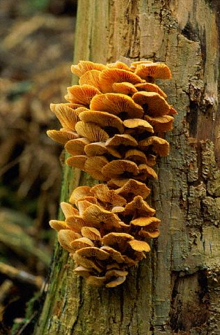
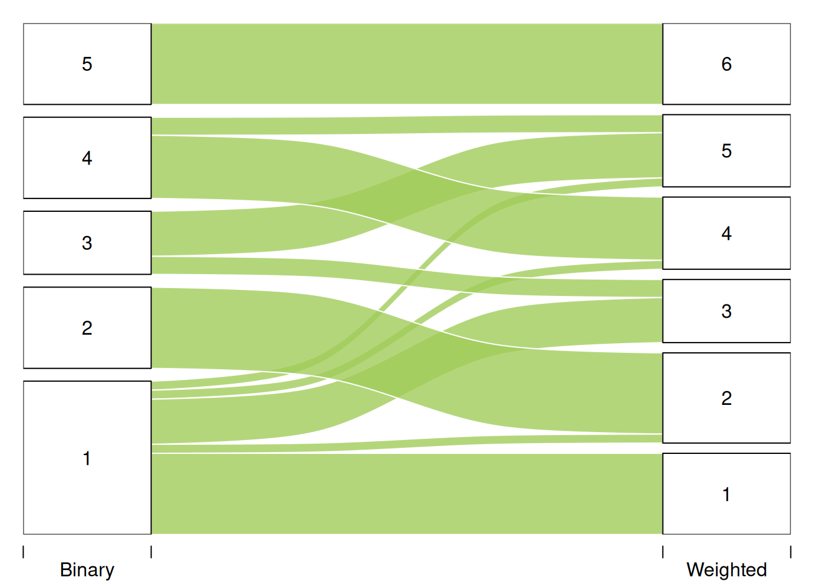

Code
library(sbm)
library(ggplot2)
library(knitr)
library(patchwork)
library(mclust)
library(stringr)
library(bipartite)
library(kableExtra)Variational EM for Stochastic Block Model
This chapter comes with Chapter 5 of the book “Approximate E step” . It illustrates the use of the variationnal EM on a Stochastic Block model adapted to a Fungus-Tree parasitism network (Vacher et al. (2008)). This illustration was adapted from the vignette of the sbm package.
All the algorithms have been pre-run and the results are in allRes_TreeFungi.rda. You can run the algorithms by yourself by copy-pasting the commands.

You will need the package sbm package, along with some additional packages for data manipulation and visualization:
library(sbm)
library(ggplot2)
library(knitr)
library(patchwork)
library(mclust)
library(stringr)
library(bipartite)
library(kableExtra)We consider the fungus-tree interaction network studied by Vacher et al. (2008), available with the package sbm. This data set provides information about \(154\) fungi sampled on \(51\) tree species. It is a list with the following entries:
tree_names : list of the tree species namesfungus_names: list of the fungus species namestree_tree : weighted tree-tree interactions: number of common fungal species two tree species host.fungus_tree : binary fungus-tree interactionscovar_tree : covariates associated to pairs of trees (namely genetic, taxonomic and geographic distances)data("fungusTreeNetwork")We provide here the codes to obtain the figures of the book.
fungus_tree <- t(fungusTreeNetwork$fungus_tree)
# shorten names
row.names(fungus_tree) <- sub("\\s*\\(.*", "",str_sub(fungusTreeNetwork$tree_names, 1, 30))
colnames(fungus_tree) <- sub("\\s*\\(.*", "",str_sub(fungusTreeNetwork$fungus_names, 1, 30))
ntree= nrow(fungus_tree)
nfung= ncol(fungus_tree)
# Plot the bipartite network with vertical labels for the lower level (species)
plotweb(
fungus_tree,
sorting = "normal",
# Labels
higher_labels = names(colSums(fungus_tree)),
lower_labels = rownames(rowSums(fungus_tree)),
text_size = 0.35,
# Géométrie
spacing = 0.50,
box_size = 0.08,
lab_distance = 0.03,
# Divers
horizontal = FALSE,
plot_axes = FALSE,
)
We now plot a zoom of the network on the 10 more connected species of each group.
top_trees <- order(rowSums(fungus_tree), decreasing = TRUE)[1:10]
top_fungi <- order(colSums(fungus_tree), decreasing = TRUE)[1:10]
fungus_tree_10 <- fungus_tree[top_trees, top_fungi]
par(mar = c(1, 1, 1, 1))
plotweb(
fungus_tree_10,
higher_labels = names(colSums(fungus_tree_10)),
lower_labels = rownames(rowSums(fungus_tree_10)),
sorting = "normal",
)
In what follows, we will illustrate the estimation of the SBM and LBM models with sbm package. This package estimates the paramaters with VEM and selects the number of blocks by the ICL, exactly as presented in the book (Chap. 5). For didactic purpose, we first consider simple networks and then bipartite network as follows: - simple tree-tree network in its binary version - simple tree-tree network in its weighted version. - bipartite network between trees and fungi.
We first consider the binary network where an edge is drawn between two trees when they do share a least one common fungi:
tree_tree_binary <- 1 * (fungusTreeNetwork$tree_tree != 0)
row.names(tree_tree_binary) <- colnames(tree_tree_binary) <- str_sub(fungusTreeNetwork$tree_names, 1, 30)The function plotMyMatrix can be used to represent the adjacency matrix corresponding to that network:
g <- plotMyMatrix(tree_tree_binary , dimLabels = list(row = 'Trees', col = 'Trees'), plotOptions = list(legend = FALSE,rowNames = TRUE,colNames = TRUE))
g <- g + theme()
g
We look for some latent organization of the network by adjusting a simple SBM with the function estimateSimpleSBM. We assume the our matrix is the realization of the SBM model.
The SBM model is defined as: \[\begin{align*} (Z_i) \text{ i.i.d.} \qquad & Z_i \sim \mathcal{M}_K(1, \pi) \\ (Y_{ij}) \text{ indep.} \mid (Z_i) \qquad & (Y_{ij} \mid Z_i=k, Z_j = \ell) \sim \mathcal{B}(\alpha_{k\ell}) \end{align*}\]
The function from sbm package (based on the package : blockmodels) infers this model with Variational EM. Note that simpleSBM refers to standard networks (w.r.t. bipartite).
We apply the VEM and ICL criterion to infer the structure of the network.
mySimpleSBM <- tree_tree_binary %>%
estimateSimpleSBM("bernoulli", directed= FALSE,
dimLabels ='tree',
estimOptions = list(verbosity = 1, plot=FALSE))We can plot the ICL with respect to \(K\) as follows.
mySimpleSBM$storedModels %>%
ggplot() +
aes(x = nbBlocks, y = ICL) + geom_line() + geom_point(alpha = 0.5) + geom_vline(xintercept = mySimpleSBM$storedModels$nbBlocks[which.max(mySimpleSBM$storedModels$ICL)],color = "red")
We obtain 5 blocks. We can now plot the reordered matrix.
p1 <- plot(mySimpleSBM, type = "data", dimLabels = list(row = 'tree', col = 'tree'))
p2 <- plot(mySimpleSBM, type = "expected", dimLabels = list(row = 'tree', col = 'tree'))
p1 | p2
Instead of considering the binary network tree-tree we may consider the weighted network where the link between two trees is the number of fungi they share.
We plot the matrix with function plotMyMatrix:
tree_tree <- fungusTreeNetwork$tree_tree
plotMyMatrix(tree_tree, dimLabels = list(row = 'tree', col = 'tree'))
Here again, we look for some latent structure of the network by adjusting a simple SBM with the function estimateSimpleSBM, considering a Poisson distribution on the edges.
The Poisson-SBM model is: \[\begin{align*} (Z_i) \text{ i.i.d.} \qquad & Z_i \sim \mathcal{M}_K(1, \pi) \\ (Y_{ij}) \text{ indep.} \mid (Z_i) \qquad & (Y_{ij} \mid Z_i=k, Z_j = \ell) \sim \mathcal{P}(\exp(\alpha_{kl})) = \mathcal{P}(\lambda_{kl}) \end{align*}\]
mySimpleSBMPoisson <- tree_tree %>%
estimateSimpleSBM("poisson",
directed = FALSE,
estimOptions = list(verbosity = 2 , plot = TRUE),
dimLabels = c('tree'))We now plot the matrix reordered according to the memberships estimated in the SBM. Once again, one can also plot the expected network which, in case of the Poisson model, corresponds to the expected weight of connections between any pair of nodes in the network.
plot(mySimpleSBMPoisson, type = "data") | plot(mySimpleSBMPoisson, type = "expected")
The composition of the clusters/blocks can be displayed by now be scrutined.
#-------------------------------------------
print_cluster = function(Z,names_Z){
names(Z) = sub("\\(.*", "", names_Z) # short tree species names
Z <- sort(Z)
K <- max(Z)
clusters <- lapply(1:K,function(k){names(Z)[Z==k]})
max_len <- max(sapply(clusters, length))
df <- sapply(clusters, function(x) c(x, rep('', max_len - length(x)))) %>% as.data.frame()
names(df) <- paste('Cluster',1:K)
return(df)
}
df <- print_cluster(mySimpleSBMPoisson$memberships, fungusTreeNetwork$tree_names)
knitr::kable(df, caption = "Tree Clusters")| Cluster 1 | Cluster 2 | Cluster 3 | Cluster 4 | Cluster 5 | Cluster 6 |
|---|---|---|---|---|---|
| Abies alba | Large Maples | Abies nordmanniana | Small Maples | Cupressus sempervirens | Betulus spp |
| Abies grandis | Fagus silvatica | Larix kaempferi | Alnus glutinosa | Pinus brutia | Carpinus betulus |
| Cedrus spp | Fraxinus spp | Picea sitchensis | Castanea sativa | Pinus cembra | Populus tremula |
| Larix decidua | Juglans spp | Pinus halepensis | Quercus ilex | Pinus pinea | Quercus pyrenaica |
| Picea excelsa | Cultivated Poplars | Pinus nigra nigra | Quercus pubescens | Pinus radiata | Sorbus aucuparia |
| Pinus nigra laricio | Prunus avium | Pinus strobus | Quercus suber | Pinus taeda | Sorbus domestica |
| Pinus pinaster | Quercus petraea | Pinus uncinata | Sorbus aria | Platanus hybrida | Taxus baccata |
| Pinus sylvestris | Quercus robur | Tilia spp | Tsuga heterophylla | Thuja plicata | |
| Pseudotsuga menziesii | Quercus rubra | Ulmus spp | |||
| Sorbus torminalis |
We are interested in comparing the two clusterings. To do so we use the alluvial flow plots and compute the ARI .
listMemberships <- list(Binary = mySimpleSBM$memberships)
listMemberships$Weighted <- mySimpleSBMPoisson$memberships
ARI <- adjustedRandIndex(mySimpleSBM$memberships, mySimpleSBMPoisson$memberships)
P <- plotAlluvial(listMemberships)
We have on each pair of trees 3 covariates, namely the genetic distance, the taxonomic distance and the geographic distance. Each covariate has to be introduced as a matrix: \(X^k_{ij}\) corresponds to the value of the \(k\)-th covariate describing the couple \((i,j)\).
We can also use the sbm package to estimate the parameters of the SBM with covariates.
THE SBM with covariates is: \[\begin{align*} (Z_i) \text{ i.i.d.} \qquad & Z_i \sim \mathcal{M}(1, \pi) \\ (Y_{ij}) \text{ indep.} \mid (Z_i) \qquad & (Y_{ij} \mid Z_i=k, Z_j = \ell) \sim \mathcal{P}(\exp(\alpha_{kl} + x_{ij}^\intercal \theta)) = \mathcal{P}(\lambda_{kl}\exp(x_{ij}^\intercal \theta)) \end{align*}\]
mySimpleSBMCov<- estimateSimpleSBM(
netMat = as.matrix(tree_tree),
model = 'poisson',
directed =FALSE,
dimLabels =c('tree'),
covariates = fungusTreeNetwork$covar_tree,
estimOptions = list(verbosity = 2,plot=TRUE))mySimpleSBMCov$storedModels %>%
ggplot() +
aes(x = nbBlocks, y = ICL) + geom_line() + geom_point(alpha = 0.5) + geom_vline(xintercept = mySimpleSBMCov$storedModels$nbBlocks[which.max(mySimpleSBMCov$storedModels$ICL)],color = "red")
We now obtain 4 blocks, which is less than before. As a consequence, the covariates do explain a part of the structure. They do not explain all the structure because \(K\) is still greater tant \(1\).
We can now extract the parameters of interest, namely the block proportions and the effect of the covariates.
mySimpleSBMCov$blockProp[1] 0.3715916 0.2159544 0.2354116 0.1770425mySimpleSBMCov$covarParam [,1]
[1,] 0.1975175
[2,] -2.0552576
[3,] -0.3586006We could perform a selection of the covariates by estimating the model with a subset of the complete covariate set.
mySimpleSBMCov2<- estimateSimpleSBM(
netMat = as.matrix(tree_tree),
model = 'poisson',
directed =FALSE,
dimLabels =c('tree'),
covariates = fungusTreeNetwork$covar_tree[-1],
estimOptions = list(verbosity = 0,plot=FALSE))
mySimpleSBMCov2$ICL - mySimpleSBMCov$ICLIn this case, mySimpleSBMCov2$ICL - mySimpleSBMCov$ICL >0 so the model without the genetic distance is prefered.
Note that the clusters do not play the same role anymore. They do not encode the structure of the network by only the residual structure after the covariates have been taking into account. As a consequence, they are difficult to interpret. Reordering the matrix with respect to this clustering may not highlight structures as clear as before.
plot(mySimpleSBMCov)Finally, we go back to the original data and analyze the bipartite tree/fungi interactions. The incidence matrix can be plotted with the function
biAdj <- fungusTreeNetwork$fungus_tree
colnames(biAdj) <- sub("\\(.*", "",fungusTreeNetwork$tree_names)
row.names(biAdj) <- sub("\\(.*", "",fungusTreeNetwork$fungus_names)
plotMyMatrix(t(biAdj), dimLabels=list(col = 'fungis',row = 'tree'),plotOptions = list(colNames=TRUE, rowNames=TRUE))+ theme(
axis.text = element_text(size = 3)
)
THE SBM adapted to bipartite network is: \[\begin{align*} (Z_i) \text{ i.i.d.} \qquad & Z_i \sim \mathcal{M}_K(1, \pi) \\ (W_j) \text{ i.i.d.} \qquad & W_j \sim \mathcal{M}_L(1, \rho) \\ (Y_{ij}) \text{ indep.} \mid (Z_i, W_j) \qquad & (Y_{ij} \mid Z_i=k, W_j = \ell) \sim \mathcal{B}(\alpha_{k\ell}) \end{align*}\]
myBipartiteSBM <- estimateBipartiteSBM(
netMat = as.matrix(fungusTreeNetwork$fungus_tree),
model = 'bernoulli',
dimLabels=c(row = 'fungis',col = 'tree'),
estimOptions = list(verbosity = 1,plot = TRUE))We can now plot the reorganized matrix.
plot(myBipartiteSBM, type = "data") | plot(myBipartiteSBM, type = "expected")
An interesting structure emerges: block 2 of trees interacts primarily with fungal blocks 2 and 4, whereas tree blocks 1 and 3 mainly interact with fungal blocks 1 and 2. Tree block 4 consists of species associated with relatively few fungal partners.
The clusters of the trees are now:
| Cluster 1 | Cluster 2 | Cluster 3 | Cluster 4 |
|---|---|---|---|
| Picea excelsa | Large Maples | Abies alba | Small Maples |
| Pinus nigra laricio | Castanea sativa | Abies grandis | Alnus glutinosa |
| Pinus pinaster | Fagus silvatica | Abies nordmanniana | Betulus spp |
| Pinus sylvestris | Fraxinus spp | Cedrus spp | Carpinus betulus |
| Pseudotsuga menziesii | Juglans spp | Larix decidua | Cupressus sempervirens |
| Cultivated Poplars | Larix kaempferi | Pinus brutia | |
| Prunus avium | Picea sitchensis | Pinus cembra | |
| Quercus petraea | Pinus halepensis | Pinus radiata | |
| Quercus robur | Pinus nigra nigra | Platanus hybrida | |
| Quercus rubra | Pinus pinea | Populus tremula | |
| Pinus strobus | Quercus ilex | ||
| Pinus taeda | Quercus pubescens | ||
| Pinus uncinata | Quercus pyrenaica | ||
| Quercus suber | |||
| Sorbus aria | |||
| Sorbus aucuparia | |||
| Sorbus domestica | |||
| Sorbus torminalis | |||
| Taxus baccata | |||
| Thuja plicata | |||
| Tilia spp | |||
| Tsuga heterophylla | |||
| Ulmus spp |
The clusters of the fungi are now:
| Cluster 1 | Cluster 2 | Cluster 3 | Cluster 4 |
|---|---|---|---|
| Armillaria ostoyae | Armillaria gallica | Armillaria cepistipes | Amphiporthe leiphaemia |
| Heterobasidion annosum | Armillaria mellea | Caliciopsis pinea | Apiognomonia errabunda |
| Sphaeropsis sapinea | Botrytis cinerea | Cenangium ferruginosum | Apiognomonia veneta |
| Sydowia polyspora | Botryosphaeria stevensii | Ceratocystis ips | Asteroma tiliae |
| Fomitopsis pinicola | Ceratocystis minor | Biscogniauxia mediterranea var. mediterranea | |
| Fusarium oxysporum | Chrysomyxa abietis | Bjerkandera adusta | |
| Haematonectria haematococca | Chrysomyxa ledi var. rhododendri | Blumeriella jaapii | |
| Ophiostoma piceae | Coleosporium tussilaginis f.sp. senecionis-silvatici | Botryosphaeria dothidea | |
| Phaeolus schweinitzii | Cronartium flaccidum | Ceratocystis platani | |
| Cronartium ribicola | Chondrostereum purpureum | ||
| Crumenulopsis sororia | Colpoma quercinum | ||
| Cyclaneusma minus | Cristulariella depraedans | ||
| Cyclaneusma niveum | Cronartium quercuum | ||
| Cylindrocarpon didymum | Cryptodiaporthe castanea | ||
| Delphinella abietis | Cryptostroma corticale | ||
| Gremmeniella abietina | Cryptodiaporthe hystrix | ||
| Herpotrichia juniperi | Cryphonectria parasitica | ||
| Lachnellula willkommii | Cryptodiaporthe populea | ||
| Leptographium lundbergii | Daedaleopsis confragosa | ||
| Leptographium procerum | Dicarpella dryina | ||
| Lirula macrospora | Discella castanea | ||
| Lirula nervisequia var. nervisequia | Drepanopeziza punctiformis | ||
| Lophodermium conigenum | Entoleuca mammata | ||
| Lophodermium piceae | Eutypa lata | ||
| Lophodermium pinastri | Fistulina hepatica | ||
| Lophodermium seditiosum | Fomes fomentarius | ||
| Melampsorella caryophyllacearum | Fomitopsis cytisina | ||
| Melampsora populnea | Fusicoccum quercus | ||
| Mycosphaerella dearnessii | Ganoderma adspersum | ||
| Mycosphaerella pini | Ganoderma applanatum | ||
| Nectria fuckeliana | Ganoderma resinaceum | ||
| Ophiostoma serpens | Gnomonia leptostyla | ||
| Pestalotiopsis funerea | Gymnopus fusipes | ||
| Phacidium coniferarum | Hypoxylon fragiforme | ||
| Phaeocryptopus gaeumannii | Laetiporus sulphureus | ||
| Phellinus chrysoloma | Leucostoma persoonii | ||
| Phellinus hartigii | Melampsora allii-populina | ||
| Phellinus pini | Melampsora laricis-populina | ||
| Pucciniastrum epilobii | Melanconis modonia | ||
| Rhabdocline pseudotsugae | Meripilus giganteus | ||
| Rhizosphaera kalkhoffii | Microsphaera alphitoides | ||
| Rhizosphaera macrospora | Microstroma juglandis | ||
| Rhizosphaera oudemansii | Monochaetia monochaeta | ||
| Rhizina undulata | Mycosphaerella castaneicola | ||
| Sarea resinae | Mycosphaerella microsora | ||
| Sirococcus strobilinus | Nectria cinnabarina | ||
| Sparassis crispa | Nectria coccinea | ||
| Stereum sanguinolentum | Nectria ditissima | ||
| Truncatella hartigii | Nectria veuillotiana | ||
| Valsa kunzei | Neonectria galligena | ||
| Zythiostroma pinastri | Ophiostoma ulmi | ||
| Oudemansiella mucida | |||
| Oxyporus populinus | |||
| Pezicula cinnamomea | |||
| Phellinus igniarius | |||
| Phellinus robustus | |||
| Phloeospora aceris | |||
| Phomopsis juniperivora | |||
| Phomopsis quercella | |||
| Phyllosticta aceris | |||
| Phyllactinia guttata | |||
| Pleurotus ostreatus | |||
| Pleuroceras pseudoplatani | |||
| Podosphaera clandestina var. aucupariae | |||
| Pollaccia radiosa | |||
| Polyporus squamosus | |||
| Pseudoinonotus dryadeus | |||
| Rhytisma acerinum | |||
| Rosellinia necatrix | |||
| Sawadaea tulasnei | |||
| Schizophyllum commune | |||
| Seiridium cardinale | |||
| Septotis podophyllina | |||
| Septoria quercicola | |||
| Stegonsporium pyriforme | |||
| Stereum hirsutum | |||
| Stigmina carpophila | |||
| Taphrina betulina | |||
| Taphrina caerulescens | |||
| Taphrina cerasi | |||
| Taphrina populina | |||
| Titaeosporina tremulae | |||
| Trametes gibbosa | |||
| Trametes versicolor | |||
| Valsa ambiens | |||
| Valsa nivea | |||
| Valsa sordida | |||
| Venturia fraxini | |||
| Venturia inaequalis | |||
| Verticillium dahliae |